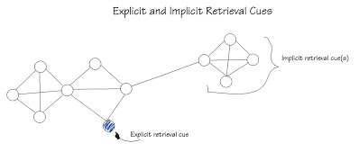
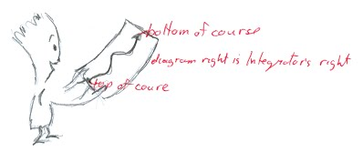
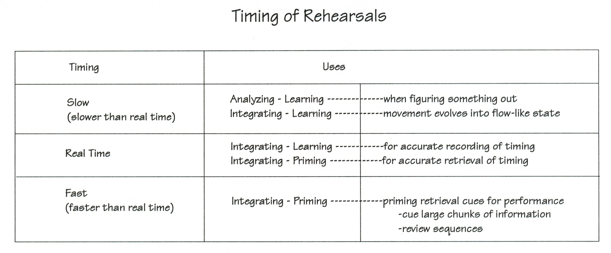
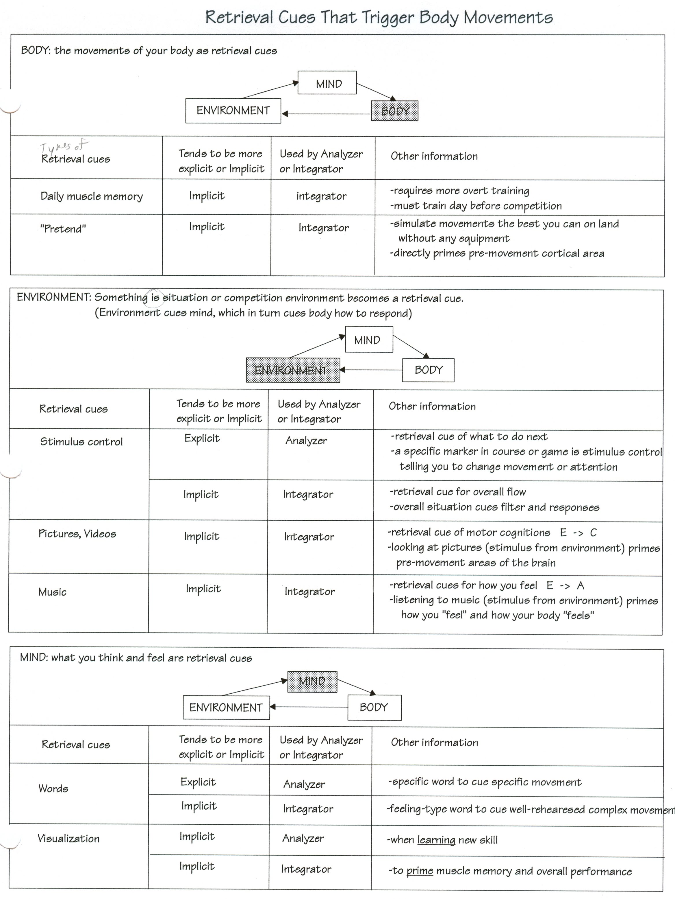
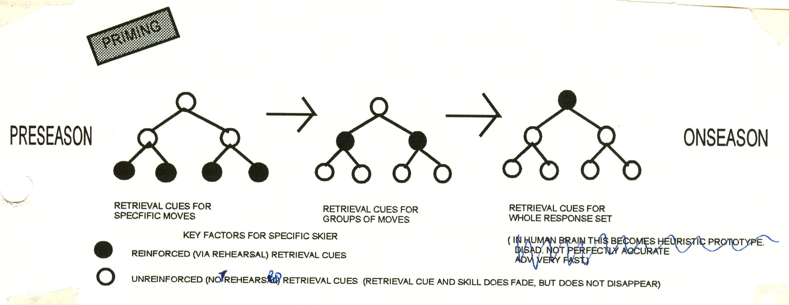
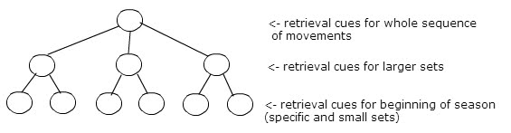

|
ch6 Self-Dircted Coaching Manual
ch 6 REHEARSE AND RECALLING SPORT
RETRIEVAL CUES At the onset of book, we stated that our goal was to learn something in such a way that it can be retrieved when we want it. A retrieval cue is anything that triggers or aids recall. Our goal then, is to develop control over movements by making retrieval cues for specific movements and complete flow-like movements. Ideally, a retrieval cue for sport should be something we can touch or see; anything that can put in a shoe box, such as a written word, picture, or music. Retrieval cues, such as the mood, are hard to recreate, and therefore are not as useful for competition. Training should include the creation of retrieval cues for skills. Retrieval cues are then rehearsed before training or competition. There are implicit retrieval cues and explicit retrieval cues. Implicit retrieval cues are always being created. This can be advantageous because they are integrated and complex, promoting smooth movements and mastery. The disadvantage of implicit retrieval cues is that you have less control over how and where they are created. Explicit retrieval cues are very precise. They are objectively defined, whereas implicit retrieval cues are more subjective. Explicit retrieval cues are usually created and used by the Analyzer. The Analyzer would then interrupt the Integrator with specific instructions. In other words, the flow-like movements run by the Integrator are partially interrupted by the explicit retrieval cue from the Analyzer. Figure 6-1 “Implicit Explicit Retrieval Cues”is a drawing of how explicit and implicit retrieval cue would look at the neurological level. Figure 6-1: Implicit Explicit Retrieval Cues 
How You Make Retrieval Cues Thinking of a retrieval cue while at the same time thinking or doing an activity will create an association. For example, a skier may think "crisp, crisp, crisp" while doing their crisp-like turns. This will associate the word "crisp" directly with the movement. Be careful not to think "this retrieval cue means this movement". In this case, the retrieval cue will not associate to the movement because the experience of the crisp-like movement is not in working memory. The "analytic definition" gets associated to the word "crisp" but the "integrated experience" will not associate with the word "crisp". There needs to be a direct association of the retrieval cue with the movement so that it can be used to prime the cortical areas later used in "integration". We can usually tell if a retrieval cue is working properly. When thinking of a retrieval cue, such as a word or a picture, and at the same time an idea comes to mind, and is consistent over time, then the retrieval cue is working. Sometimes, when we perform an activity, we can experience a retrieval cue in our mind. For example, the word "crisp" may pop into the skier’s head while performing that crisp-like ski turn. Types of Retrieval Cues Figure 6-2 “Retrieval Cues That Trigger Body Movements", charts various types of retrieval cues. Retrieval cues can be made for specific body movements, or fully integrated flow-like movements. I have organized the chart into three categories: Body, Environment and Mind. These are the main modules of the ABCE diagram described in the Goal Setting Section, chapter 1. In this diagram, the events of the Mind influence the happenings of the Body which changes the Environment surroundings, which in turn causes a different perception in the Mind. This cycle continues forever. The events of the Mind consist of both Affects (emotions) and Cognitions (what we are thinking). In my chart, I have categorized retrieval cues that are created by our body movements, or created by the environmental situation, or created by what we are thinking and feeling. I further categorize the retrieval cues in their tendency to be explicit or implicit, and whether they are used by the Integrator or the Analyzer. The Analyzer partially interrupts the Integrator when performing sports. BODY movements as retrieval cues The movements of our BODY can be used to create and prime retrieval cues. Daily muscle memory promotes very smooth movements; however, it requires more overt training and we must train the day before competition. Pretending is when we simulate the movements of our skills the best we can on land without any equipment. It directly primes the cortical area that fires off before engaging in a physical activity. Children cannot visualize, so they have no choice but to "pretend" to rehearse their implicit cognitions. ENVIRONMENT as retrieval cues Something in the situation or competition ENVIRONMENT can be a retrieval cue. The environment cues the mind, which in turn cues the body on how to respond. Stimulus control is when something in our environment, which is called a "stimulus", has "control" of how we are going to react. Explicit stimulus control is a retrieval cue that interrupts a flow-like movement. So the Analyzer sees something in the environment and informs the Integrator of its relevance. A specific marker in a course, a beat in the music, or a play in the game, could be a trigger to partially interrupt the flow and perform a premeditated plan. It could be a cue to do a movement differently or more powerfully, or it could be a verification that the focus for the activity is correct. This is explained in detail in Performing chapter part called "End Points as Stimulus Control". Implicit stimulus control is always being used by the Integrator. The overall situation cues the filters and responses to use. The overall feel of the course conditions or play are used as cues on what to do next. State appropriate transfer (SAT) is a phenomenon where our overall physiological state and physical environment, becomes a retrieval cue. A student studying for an exam in a jacuzzi, has best recall in a jacuzzi. An athlete training with coffee in their system, performs best having coffee in their system. Pictures and videos can be retrieval cues for motor cognitions. Pictures are stimulus from the environment. Viewing pictures relevant to our sport, primes our pre-motor movement areas of our brain. The biological explanation was explained in the physiology section. Pictures give you a lot of implicit information that promote very smooth performances. Diagrams plotting out a course or a play are helpful. We should make sure that we draw and look at the diagram from first person, meaning we look at the diagram as if we are looking or driving on a road. When rehearsing, integrating, the top of the diagram is closest to us. However, when analyzing situation, the top of the diagram can be the top of the page as it is in textbooks. Refer to diagram “Integrator Rehearsing Diagram ‘Roadmap’”, figure 6-4. Figure 6-4: Integrator Rehearsing Diagram ‘Roadmap’ 
Music can be an implicit or an explicit retrieval cue. Implicitly, listening to music can creates an overall mood. Sometimes listening to specific music pieces or genre of music before competition gets us in the “right” mood. This mood can be physiological arousal, anger, or emotional calmness. Note that it is difficult to recreate mood exactly. The re-creation is always approximate. More precisely, music is a math of timing and tone, so very specific sequences of notes and beats can describe a movement or visual idea with up most exactness. Our abilities in understanding the exactness of music is variable. We say that a person is “gifted” if they can immediately understand that a timing and tone is right or wrong. If we have this ability to perceive music timing, then using it as a retrieval cue can be very useful. MIND events as retrieval cues The events in the MIND can be retrieval cues. This means that there are no outside influence to our thinking or feeling. We deliberately conjure up these experiences. The mind is like a conductor. It has the final decision on what the body will do. Explicit words are specific words that can be read and then thought, to cue a specific movement of the body. For example, reciting the word "arm" while doing a trick, may cue us to extend arm during that trick. These specific words are beneficial when learning new skills. Implicit words are feeling-type words that cue a well-rehearsed complex movement. For example, the word "smooth" may cue the trick to follow a flow-like state that is smooth. So how do we make a word a retrieval cue? If we have done something that "feels" right, then we should stop right away and re-experience it again in our mind. The more concentrated we are, the more efficient learning. This rehearsal by re-experiencing helps keep the event in short term memory. The longer something is in short term memory, the more time it has to get stored properly in long term memory. Once in long term memory we can retrieve it again later, and re-experience it again. To ensure that the memory is accessible as needed, we attach a retrieval cue to it. In short term memory we could repeatedly say "crisp" while at the same time experiencing that crisp-like feeling. The longer the clear experience and the retrieval cue is in our mind, the better it will be stored as a whole unit in long term memory. The word "crisp" has become a retrieval cue. Now, when we read or think of the word “crisp”, that "feeling" of crispness comes into mind. Visualization can be used by the Analyzer or Integrator. When learning a new skill, the Analyzer visualizes the parts of the movement in slow motion. Then the whole movement is visualized in slow motion. Then it is visualized in real time, and then finally the new skill is performed. The Integrator uses visualization to prime muscle memory and overall performance. Real-time visualization is best to promote proper timing, while faster-than-real-time rehearsal is used to quickly prime large chunks of information and review sequences. Figure 6-3 charts “Timing of Rehearsals”. Whether learning something new or priming existing movements, it is important for the athlete to understand their visualization point of view. Draw an "E" on your forehead. If you drew it so you could read it, then you are mostly internal and visualize from the perspective of yourself. Athletes in individually-based sports tend to visualize in this manner. If you drew the "E" on your forehead so others could read it, then you prefer to visualize in the third person, so you see yourself as others see you. Athletes in team sports tend to visualize in this manner. Studies show that top athletes tend to visualize well. This is a correlation, not a cause of good performance, so it is not an absolute requirement to visualize. Always visualize in "video" so that one movement flows into the next. Visualizing with static "pictures" causes movements to stop between “pictures” making robot-like movements. Figure 6-3: Timing of Rehearsals 
Figure 6-2: Retrieval Cues That Trigger Body Movements

PRIMING: PREPARATION FOR PERFORMANCE The goal of all competitive athletes is to do what they planned on tournament day. Tournaments are a time to reality check, and sometimes reality is hard to swallow, hence the saying “ it’s tournament day, time to swallow your darts”. Overall, good performance requires appropriate priming and control of arousal, emotions and attention. In the Goal Setting Section I suggested ways in which you could define the basic tasks in your sport. This objective definition of sport requirements gives clear guidelines as to types of skills to learn. Then in chapters 5 and 6, I described how to learn these skills along with their retrieval cues. Now that these variables are learned, it is time to perform the athletic skills. I begin with a discussion of final preparation for performance: how to prime, or prepare, the body and mind for the tournament. Then in chapter 7, I explain events that occur while we actually perform. I explain the differences between focus and flow while performing, along with the different types of attention strategies that can be used to promote a focused or flow-like state. Recall "cycle of learning". New skills are learned and retrieval cues are attached to them. Then the new skills are integrated into our default mode, and retrieval cues are attached to it. A pre-competition priming procedure metabolizes the retrieval cues that we learned. It also involves getting our body warmed up and in an ideal physical state for what we want to do. Specifically, priming is the procedure we use to prepare our body and mind for an activity. Priming Body The ideal pre-competition physical state for a body is achieved with direct physical intervention and psychosomatic control. Physically, the body is primed with a warm-up to increase metabolism and arousal. Elite athletes often have trainers to help them achieve this ideal physical state. Psychosomatic interventions are sometimes also used to achieve an ideal arousal state in the body. Various ways of thinking are used to influence the biochemistry of the body. (psycho means mind, somatic means body). Popular methods for physiological control of arousal are progressive relaxation, biofeedback, autogenic training, autohypnosis. These techniques are very structured. We often just want a quick way to change the state of our bodies. The following may be helpful. To relax muscles, we can tighten the muscle group, then loosen that group. To get aroused and increase adrenaline, we can increase our heart rate by jumping up and down. To get more oxygen to our muscles, we can hyperventilate. To slow our heart rate, we can hold our breath. It’s good to keep a journal, to write down the quick methods that work for you. Priming Mind For good consistent performances, the mind needs to be primed appropriately as well. There is an area in the brain that fires off just before an activity performs, as described in chapter 3. A priming procedure using retrieval cues will control how this area fires off. As retrieval cues are rehearsed, there is an increase in metabolism in areas of brain required for physical activity. At the same time there will be a decrease in metabolism in areas of the brain not required for the physical activity, mainly in the emotional centers of the brain. So properly learned retrieval cues have a double advantage. They give us explicit control over the feel of your activity, while at the same time preventing negative emotions from interfering with your performance. Different types of retrieval cues should be rehearsed at different points in the athletic season, as shown in “Retrieval Cues by Season”, figure 6-5. Preseason rehearsal requires rehearsing retrieval cues for very specific moves, while the on-season may require rehearsing one retrieval cue to activate a whole response set. When an athlete has troubles achieving the feeling of flow on the on-season, the retrieval cues for specific response sets should be rehearsed. These are the same retrieval cues that we created as our skills levels advanced, as shown in “Retrieval Cues by Ability Level”, figure 6-6. Figure 6-5: Retrieval Cues by Season 
Figure 6-6: Retrieval Cues by Ability Level 
So why is it that at a more advanced level, we need fewer retrieval cues to get the same result? Let’s consider this neurologically. Recall the information processing model described in chapter 4. Once our brain has decided what to do, it will send information out in chunks. These info chunks tell the spinal column what next sequence of movements to perform. So most of our learned movement series are programmed into the nervous system of our spinal cord and peripheral nervous system. That is why when we do different sports, we have a gait that is our own. The advantage is that we can perform these series of movements quickly. It is physiologically impossible to send messages back and forth from the brain that fast. There is a noticeable time for information to pass through our spinal column. If we stub our toe, we hear the crunch long before we start jumping around in pain. The first message of pain is very local in acute. Then after a few minutes, the pain is wider and general. Getting back to using less retrieval cues at the elite level. Consider the concert pianist. Fingers are racing, yet, we can see the pianist is thinking in giant steps, perhaps just suggesting a thought every 1 to 3 seconds. They have memorized the piece in large chunks in the brain, as well as the spinal column linked to finger movement. When we are properly primed, we may sense ourselves doing the activity in a controlled manner. "I feel it, it's happening." Will proper training and priming guarantee of good performance? No. One has to consider events that occur while performing as well. Practical Example The following is a practical suggestion for rehearsing to get things right, and rehearsing for when things go wrong. On competition day, we may want to rehearse all our retrieval cues as soon as we wake up, before any anxiety creeps in. Rehearse the whole performance in real-time and perhaps faster than real time. Rehearse the different perceptions that would be experienced while performing. Also rehearse the actions for when things go wrong: our "when shit happens list". At the beginning of the season, all our retrieval cues should be rehearsed. This includes specific movements and whole movements. By the end of the season, one holistic retrieval cue may be enough. Just as we step up to compete, we should rehearse the first things that we are to do, so that those specific movements are in working memory. Performing those first movements, will trigger the rest of the primed movements. Recall in my discussion of athletic development, that we develop athletic styles. We have our default mode consisting of our proactive and reactive modes. It also includes our rescue or panic response. These are a set of pre-meditated saves, with retrieval cues attached to them. These include techniques in balance that can save us when we go off balance, and techniques of safe ways to fall, if that is inevitable. The practical benefit is that we can still finish our performance, even if it is not pretty. The emotional benefit, is that we enter the competition knowing what we have to do, and also what to do when things go wrong. So we say to ourselves, “no matter what, I am ready.” A well rehearsed rescue response set is triggered by retrieval cues from the environment. This means that the situation triggers the response. We can control this more by attaching a retrieval cue word, to a panic situation, which then triggers a response. The same learning principles apply. Once we have our list of responses, it is usually rehearsed realtime early in the day, so that our nervous system is fully primed, and then just before we step out to compete, we can go over the list quick to ensure the retrieval cues for the responses are activated. Then, when performing, if a panic situation comes up, our bodies will respond as planned. [end of chapter 6] SDCM home |